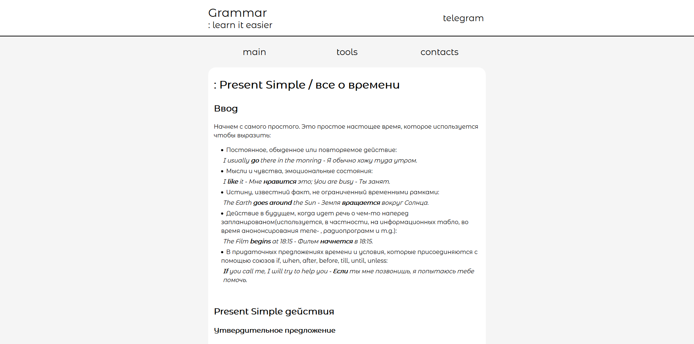

The Grammar
Below you can see some information about project
| Date of release | unreleased |
| Progress | unfinished |
| what was used | HTML5, CSS3 |
| Idea | To create site for learning English for Russian speaking people |
Why is project unfinished?
Site is underdone because of my having lost desire to keep on working on it. I have done necessary markup and have added styles. All i needed was to add content in order to it would not look like empty page. That process took too much time which I could spent in learning something new. I followed right in that way.
Idea
It was about September, 2019 when I actually had been starting to learn web-programming. Idea of creating site, as you can see above, came to my mind when I had been on my English course lesson. That day we should learn new theme and while I was taking notes of it, the idea of making internet project to lean English for free and everybody. Then I already knew how it would look on the site.
Technical part
That projects was written by me useing basic skills in HTML5 and CSS3. It took me about mounth to learn them. Then I even didnt know how to hide element and show it when its required, thus I had to seek out a solution. Euidently that it was simple JavaScript that scared me.
Chub Nicolas
self-taught web-programmer